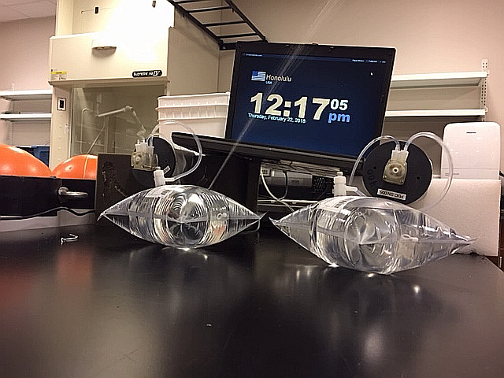

15 Portable Underwater Collector (PUC)
Part of the diel suite, the Programmable Underwater Collector (PUC) is a moored instrument used to collect water samples autonomously at pre-determined times. The OCC team uses the PUC to analyze the diel carbonate cycle at study sites.
15.1 General Notes
Decide on sampling interval for deployment period
There are 3 versions of PUCS with different O rings
See PUC fill time table below to program each PUC with a specific pump time to achieve the desired 800 mL in each tedlar sample bag
Batteries: use one change of 12 AA alkaline batteries for two deployments
Red ON/OFF switch mounted on motherboard
- turn to ON when PUC in to be used.
- when ON, access Basic stamp Editor using magnet+PUC comm cable.
- when ON, flush tubing prior to deployment using magnet.
- turn to OFF when PUC in storage. No need to remove AA batteries.
15.2 Preparation the Day Before Deployment
Mount PUCs to crates with cable tieas, 3 PUCs per crate. Print out the PUC deployment underwater checklist at this Google Drive link
Preparing 1L tedlar sample bags with mercuric chloride
- Label the bags with a large chisel tip sharpie with the hour they will sample in 24hr time format
- Open bag valve 1 full turn
- Evac air out of bag with plastic syringe
- Close bag valve while syringe is attached and vacuum is apparent
- Load up glass syringe with 200 ul HGCL2, draw it carefully, tap to remove air
- Insert syringe needle through septum and inject HGCL2
15.2.1 Programming PUCS with firmware version 2018-JAN-7
Note: This should take place the night before the planned deployment
If necessary, install 12 new AA alkaline batteries into the PUC (one set of batteries is used for 2 deployments)
Open the PUC carefully with the PUC opener tool
Connect the PUC to your PC with the RS232 (serial) cable and a Keyspan USB to serial adapter. NOTE: It may be necessary to plug the USB cable into a high-power USB port on your PC. If using the instrument computer PICSC26, this is the USB port that has a lighting bolt symbol over it
Turn on the red power on/off switch on the PUC motherboard
Open the Basic Stamp Editor program
Select Run then Debug then New to open a programming terminal
If the PUC does not connect, try selecting a different com port
Individual PUC d1eployment status is displayed
Check the date, time, pump time and programmed time (the PUC pump will run for 10 seconds while you review this information, at the end of the 10 sec period, you will have 30 sec waiting period to input commands into the terminal before the pump runs again and re-displays current settings. If you do not enter commands within the 30s window, the program will time out and you must swipe the magnet over the magnetic switch (red dot on endcap) to start a new 30s programming window)
Set parameters for the deployment keying and pressing enter for numbers 1-4 that correspond to the following:
- set Date/Time: MM/DD/YY, HH/MM
- Display Date/Time: to display the date time programmer has entered.
- set sample Date and Time: MM/DD/YY, HH/MM (we set PUCs to UTC time, use the PUC deployment planning and data sheet at this Google Drive link to determine the proper UTC time according to the local solar time), and Pump Time (the amount of time in minutes that the pump runs to collect the water sample.
If the PUC time reads more than 60 seconds, run the script in the basic stamp editor to correct this: PUC Clock Fix_DS1302_Demo.bs2 found where is this file, when found we need to put it in the PUC google drive folder?
- Then open the latest firmware from basic stamp from the PUC Google Drive Folder: PUC firmware upgrade 07Jan18.bs2
- note: You may need to change the comp port number in the top line of code
Start Sample Program, results in the PUC displaying Entering sample Mode + Sample Time + Pump Time + current Date/Time
NOTE: all PUCs do not pump at the same rate. We aim to have 800mL of water in each 1L bag. The time it takes for a pump to fill a bag to 800mL varies from 27-36 minutes; see the chart below of PUC times in the next and program each PUC accordingly.
The final program step is ALWAYS press #4 to get Entering sampling Mode prompt. Confirm sample date/time and pump time.
Pre-fill a Diurnal Suite Datasheet Spreadsheet with relevant information for the deployment
After programming is complete and all parameters are verified, seal the PUC
- clean/lubricate o-ring.
- Install one large or several small desiccants inside the PUC, ideally rubber banded to the motherboard or battery packs somehow
- hand tighten PUC cap to PUC body using PUC opener tool
15.3 PUC Rates and Fill Times (As of June 2018)
| PUC SN | Time to 800mL (minutes) | March 2018 Tested Rate (mL/min) |
|---|---|---|
| 1 | 39 | 20.6 |
| 2 | 30 | 26.4 |
| 3 | 31 | 25.5 |
| 4 | 32 | 24.7 |
| 5 | 33 | 23.9 |
| 6 | 39 | 20.6 |
| 7 | 32 | 25.2 |
| 8 | 29 | 27.4 |
| 9 | 37 | 21.8 |
Don’t Overfill Those PUC Bags!

15.4 PUC Deployment
- Ensure PUCs are fastened securely to the milk crate (maximum 4 PUCs per crate)
- With tubing connected to water out valve tip but NOT YET to the tedlar bag, swipe the magnetic switch (red dot) on PUC endcap to run the pump once to pump ambient seawater through the tubing.
- Connect the other end of the tubing to the water in valve tip of the tedlar bag
- Open tedlar bags by turning valve one full turn
15.5 PUC Recovery
Print out the PUC retreival underwater checklist at this Google Drive link
- Gather tools needed
- Zip tie snips
- Goody bag for collecting filled Tedlar bags
- 50lb open bottom lift bag and carabiner to lift milk crates
- A few extra large (at least 2ft cable ties)
- Close valves on all sample bags
- Remove tubing from sample bag valves
- Use snips Carefully collect tedlar bags and snow in a goody bag dedicated solely to them for safe ascent; be careful when handing them up out of the water to whoever receives them on the small boat
- Secure the two milk crates together with zip ties if not already fastened together for easier lifting
- Affix 50lb lift bag with carabiner to milk crates in a secure fashion and make a safe ascent
- Upon surfacing, instruct whomever is grabbing the tedlar bag samples from you to carefully place them into a CAU bucket filled with water to reduce pressure on the bags
Transfer of Samples from Tedlar Bags to Glass Bod Bottles in Wetlab
15.5.1 Notes from Chris Langdon about PUCs
Notes from Chris Langdon:
- 9/14/15 email: The new boards have a voltage regulator that can be set to 11.0 volts if only one pump is used and to 13.0 volts if two pumps are used (this gives the motor more torque needed to drive two pumps).
- O-rings you need for the two styles of PUCs. Order from McMaster Carr. The o-rings should easily last a year. I would suggest replacing them annually.
Old style cap —- dash# 2-153. McM. 9452K174
New style cap—- dash# 2-236 McM 9452K165
- 1/6/2018 email about new firmware: It gives you 30 sec to hit a key about the pump starts running. I also reduced the pump run time to 10 seconds. You can now specify the month, day, hour and minute that the PUC will sample so you can set it up days in advance. You will need the Basic Stamp editor application downloaded from Paralax.